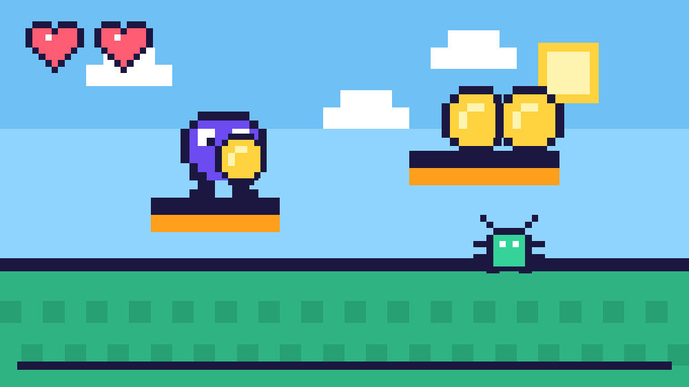

Qué es
Es el proceso de crear un videojuego desde el concepto inicial hasta su versión final. Reúne programación, diseño gráfico, animación, sonido, música y más.
Conocer las etapasUn videojuego nace como una idea y llega a las pantallas gracias a programadores, artistas, músicos y probadores que trabajan juntos. Aquí recorrerás ese camino paso a paso.

Es el proceso de crear un videojuego desde el concepto inicial hasta su versión final. Reúne programación, diseño gráfico, animación, sonido, música y más.
Conocer las etapasDepende del alcance. Un juego AAA para PC o consola puede requerir de dos a siete años; uno independiente o móvil suele ser más corto.
Ver quién lo haceMotores como Unity, Unreal Engine o GDevelop, junto con lenguajes como C++, permiten convertir las ideas en juegos que funcionan.
Explorar herramientasEl desarrollo comercial comenzó en la década de 1970, con las primeras consolas y computadoras personales. Con equipos tan limitados, una sola persona podía programar un juego completo. A medida que las máquinas mejoraron y los jugadores esperaron más, crecieron los equipos y los plazos.
Hoy conviven grandes estudios, estudios medianos y creadores independientes. Todos siguen un ciclo parecido: probar, corregir y volver a mejorar.